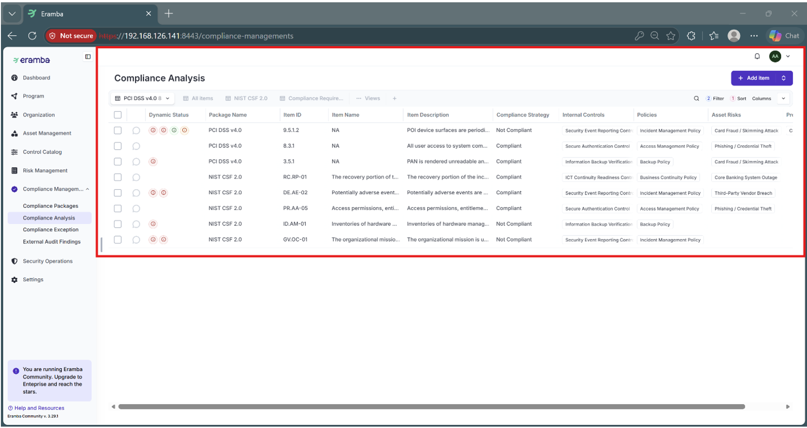
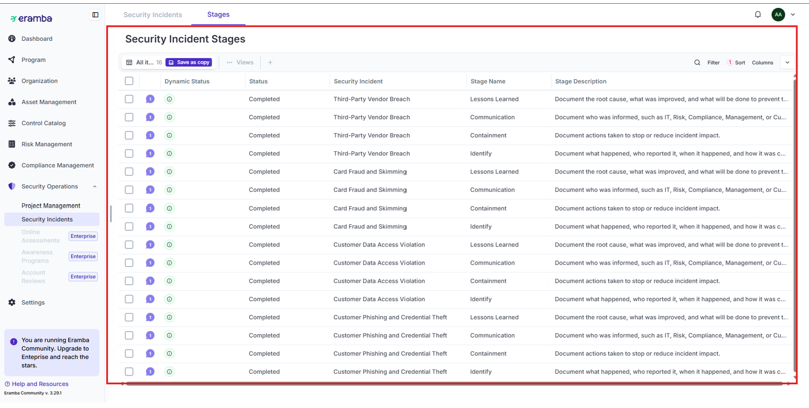
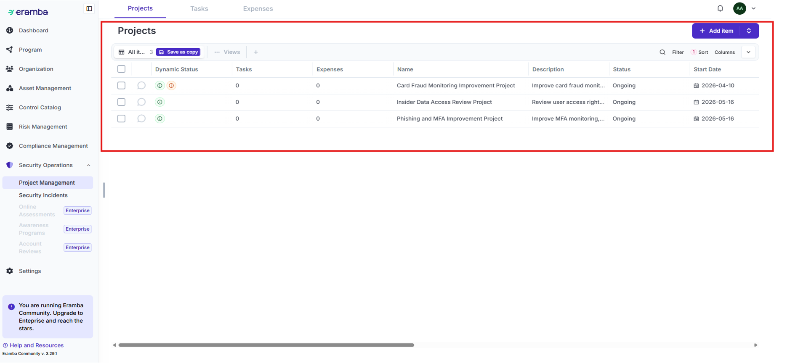
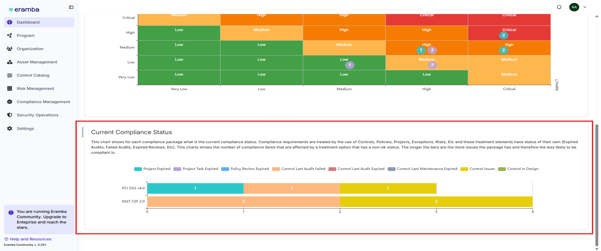

What the project set out to do
Evaluate a simulated bank's regulatory posture against two major frameworks at once, and turn the findings into a live, trackable compliance program rather than a static audit report.
What I actually built
I owned the compliance analysis, introduction framework, and data privacy lifecycle configuration. I reviewed and cross-mapped 134 NIST CSF 2.0 requirements against 280 PCI DSS v4.0 criteria to assess the bank's posture, analyzed data privacy flows protecting sensitive financial records, identified compliance gaps, and worked with the team to configure findings into containerized Eramba, deployed via Docker on Ubuntu Server.
Documentation on file
102 technical figures: Docker CLI outputs, Eramba asset inventories, compliance mapping matrices, risk treatment registers, data privacy flow maps, and executive GRC dashboards.

Compliance Mapping Matrix
Incident Stage Records
Risk Treatment Projects
Executive GRC Dashboard